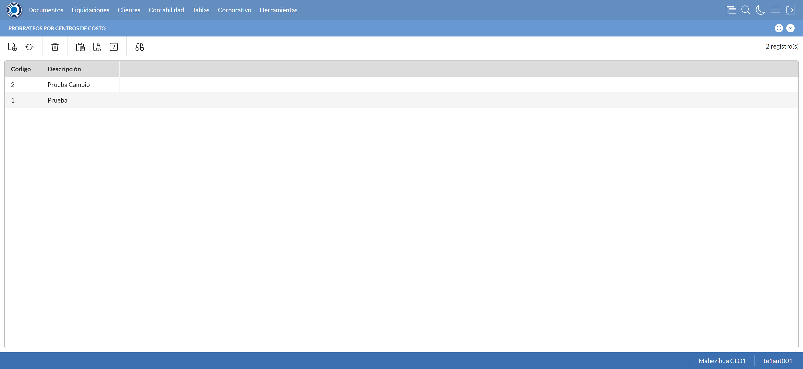
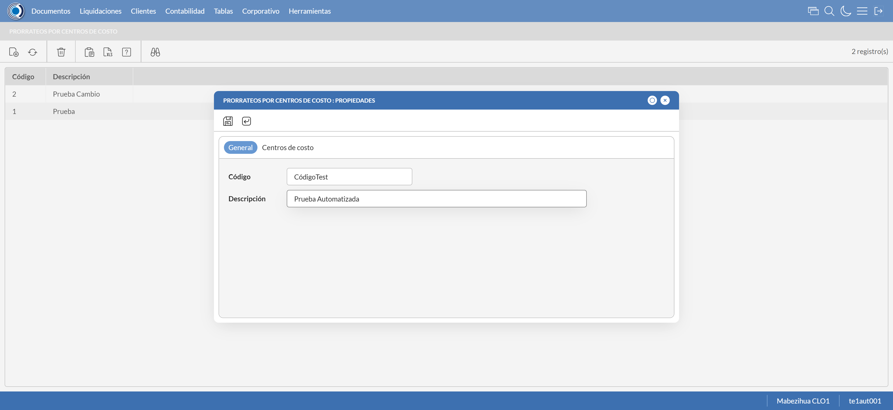
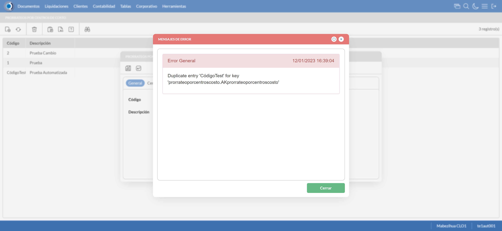
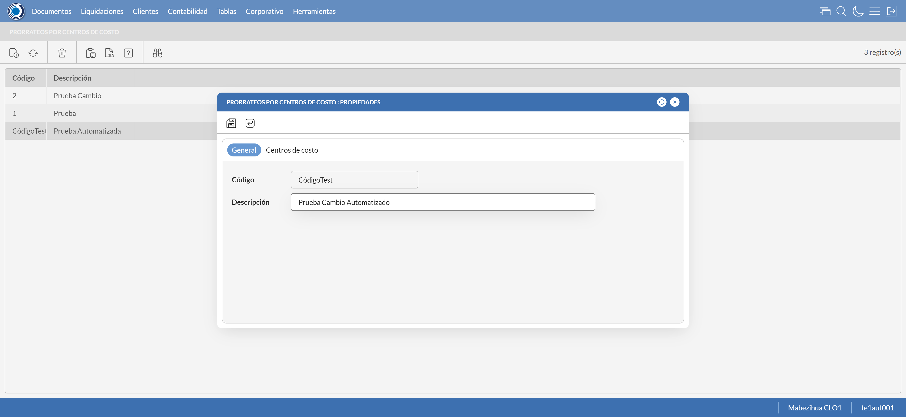
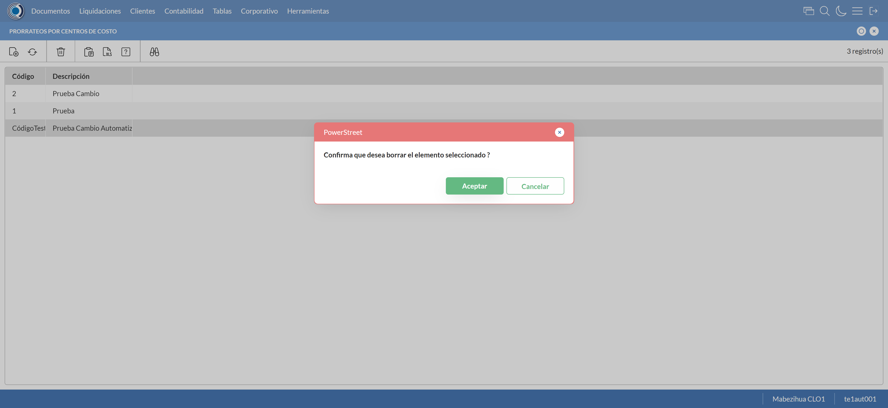

Desarrollado por : Area de Testing PWST
Fecha y hora de inicio : 2023-01-12 10:38:39
Duracion : 0:00:52.917778
Resultado : Total 8，Correctos 7 ，Errores 1 ，Taza de resultado 87.50%
Resumen 87.50% Errores 1 Fallidos 0 Correctos 7 Test realizados 8
| Caso de Prueba | Total | Correctos | Fallido | Error | Detalles | Captura del error |
| prorrateocentrocosto.Test: Escenario 1 de Prorrateos por Centro de Costo | 8 | 7 | 0 | 1 | Detalles | |
test |
ft1_1: 2023-01-12 10:38:40,542 - root - INFO - Se abre el chrome
2023-01-12 10:38:41,455 - root - INFO - Entra a la URL
2023-01-12 10:38:41,642 - root - INFO - Maximiza la pantalla
Traceback (most recent call last):
File "C:\Users\PWST\AppData\Local\Programs\Python\Python311\Lib\site-packages\selenium\webdriver\remote\switch_to.py", line 87, in frame
frame_reference = self._driver.find_element(By.ID, frame_reference)
^^^^^^^^^^^^^^^^^^^^^^^^^^^^^^^^^^^^^^^^^^^^^^^^^
File "C:\Users\PWST\AppData\Local\Programs\Python\Python311\Lib\site-packages\selenium\webdriver\remote\webdriver.py", line 856, in find_element
return self.execute(Command.FIND_ELEMENT, {
^^^^^^^^^^^^^^^^^^^^^^^^^^^^^^^^^^^^
File "C:\Users\PWST\AppData\Local\Programs\Python\Python311\Lib\site-packages\selenium\webdriver\remote\webdriver.py", line 429, in execute
self.error_handler.check_response(response)
File "C:\Users\PWST\AppData\Local\Programs\Python\Python311\Lib\site-packages\selenium\webdriver\remote\errorhandler.py", line 243, in check_response
raise exception_class(message, screen, stacktrace)
selenium.common.exceptions.NoSuchElementException: Message: no such element: Unable to locate element: {"method":"css selector","selector":"[id="mainFrame"]"}
(Session info: chrome=108.0.5359.126)
Stacktrace:
Backtrace:
Ordinal0 [0x011CACD3+2075859]
Ordinal0 [0x0115EE61+1633889]
Ordinal0 [0x0105B7BD+571325]
Ordinal0 [0x0108AC2F+764975]
Ordinal0 [0x0108AE1B+765467]
Ordinal0 [0x010BD0F2+970994]
Ordinal0 [0x010A7364+881508]
Ordinal0 [0x010BB56A+963946]
Ordinal0 [0x010A7136+880950]
Ordinal0 [0x0107FEFD+720637]
Ordinal0 [0x01080F3F+724799]
GetHandleVerifier [0x0147EED2+2769538]
GetHandleVerifier [0x01470D95+2711877]
GetHandleVerifier [0x0125A03A+521194]
GetHandleVerifier [0x01258DA0+516432]
Ordinal0 [0x0116682C+1665068]
Ordinal0 [0x0116B128+1683752]
Ordinal0 [0x0116B215+1683989]
Ordinal0 [0x01176484+1729668]
BaseThreadInitThunk [0x763C00F9+25]
RtlGetAppContainerNamedObjectPath [0x77D57BBE+286]
RtlGetAppContainerNamedObjectPath [0x77D57B8E+238]
During handling of the above exception, another exception occurred:
Traceback (most recent call last):
File "C:\Users\PWST\AppData\Local\Programs\Python\Python311\Lib\site-packages\selenium\webdriver\remote\switch_to.py", line 90, in frame
frame_reference = self._driver.find_element(By.NAME, frame_reference)
^^^^^^^^^^^^^^^^^^^^^^^^^^^^^^^^^^^^^^^^^^^^^^^^^^^
File "C:\Users\PWST\AppData\Local\Programs\Python\Python311\Lib\site-packages\selenium\webdriver\remote\webdriver.py", line 856, in find_element
return self.execute(Command.FIND_ELEMENT, {
^^^^^^^^^^^^^^^^^^^^^^^^^^^^^^^^^^^^
File "C:\Users\PWST\AppData\Local\Programs\Python\Python311\Lib\site-packages\selenium\webdriver\remote\webdriver.py", line 429, in execute
self.error_handler.check_response(response)
File "C:\Users\PWST\AppData\Local\Programs\Python\Python311\Lib\site-packages\selenium\webdriver\remote\errorhandler.py", line 243, in check_response
raise exception_class(message, screen, stacktrace)
selenium.common.exceptions.NoSuchElementException: Message: no such element: Unable to locate element: {"method":"css selector","selector":"[name="mainFrame"]"}
(Session info: chrome=108.0.5359.126)
Stacktrace:
Backtrace:
Ordinal0 [0x011CACD3+2075859]
Ordinal0 [0x0115EE61+1633889]
Ordinal0 [0x0105B7BD+571325]
Ordinal0 [0x0108AC2F+764975]
Ordinal0 [0x0108AE1B+765467]
Ordinal0 [0x010BD0F2+970994]
Ordinal0 [0x010A7364+881508]
Ordinal0 [0x010BB56A+963946]
Ordinal0 [0x010A7136+880950]
Ordinal0 [0x0107FEFD+720637]
Ordinal0 [0x01080F3F+724799]
GetHandleVerifier [0x0147EED2+2769538]
GetHandleVerifier [0x01470D95+2711877]
GetHandleVerifier [0x0125A03A+521194]
GetHandleVerifier [0x01258DA0+516432]
Ordinal0 [0x0116682C+1665068]
Ordinal0 [0x0116B128+1683752]
Ordinal0 [0x0116B215+1683989]
Ordinal0 [0x01176484+1729668]
BaseThreadInitThunk [0x763C00F9+25]
RtlGetAppContainerNamedObjectPath [0x77D57BBE+286]
RtlGetAppContainerNamedObjectPath [0x77D57B8E+238]
During handling of the above exception, another exception occurred:
Traceback (most recent call last):
File "C:\xampp\htdocs\Versiones\automatizaciones\AutoPWST\01PCC\testCase\prorrateocentrocosto.py", line 36, in test
self.driver.switch_to.frame("mainFrame")
File "C:\Users\PWST\AppData\Local\Programs\Python\Python311\Lib\site-packages\selenium\webdriver\remote\switch_to.py", line 92, in frame
raise NoSuchFrameException(frame_reference)
selenium.common.exceptions.NoSuchFrameException: Message: mainFrame
|
|
||||
test_000: Ingresa a la base de datos |
pt1_2: 2023-01-12 10:38:44,750 - root - INFO - Escribe el usuario
2023-01-12 10:38:44,878 - root - INFO - Escribe la contraseña
2023-01-12 10:38:44,973 - root - INFO - Se dio clic en el boton ingresar
2023-01-12 10:38:45,725 - root - INFO - Ejecutar Enterprise
2023-01-12 10:38:49,779 - root - INFO - Cambia entre pestañas
|
|
||||
test_001: Abre menu y ejecuta pantalla |
pt1_3: 2023-01-12 10:38:53,534 - root - INFO - Abre la pantalla de tipos de compañia
2023-01-12 10:38:54,150 - root - INFO - La pantalla ejecutada es RUBROS DE CAJA
2023-01-12 10:38:54,152 - root - INFO - Captura: C:\xampp\htdocs\Versiones\automatizaciones\AutoPWST\01PCC\report\img screen：20230112_10_38_54.png
2023-01-12 10:38:54,801 - root - INFO - Se presiona el boton 'Nuevo', para crear un nuevo registro.
|
 | ||||
test_002: Abre la ventana de nuevo y crear un registro |
pt1_4: 2023-01-12 10:38:55,363 - root - INFO - Se abrio la pantalla para el ingreso de un registro nuevo.
2023-01-12 10:38:55,415 - root - INFO - El campo 'Codigo' si se encuentra visible.
2023-01-12 10:38:55,470 - root - INFO - El campo 'Descrición' si se encuentra visible.
2023-01-12 10:38:55,568 - root - INFO - Ingresa el codigo del nuevo registro
2023-01-12 10:38:56,748 - root - INFO - Captura: C:\xampp\htdocs\Versiones\automatizaciones\AutoPWST\01PCC\report\img screen：20230112_10_38_56.png
2023-01-12 10:38:57,355 - root - INFO - Se hace el cambio de pestaña para continuar con el registro nuevo
2023-01-12 10:38:57,958 - root - INFO - Se presiona el boton 'Nuevo', para crear un nuevo registro.
2023-01-12 10:38:58,516 - root - INFO - El campo 'Centro Costo' si se encuentra visible.
2023-01-12 10:38:58,556 - root - INFO - El campo 'Porcentaje' si se encuentra visible.
2023-01-12 10:39:00,096 - root - INFO - Se presiona el boton 'guardar', para guardar el registro.
2023-01-12 10:39:00,453 - root - INFO - Se da clic en el boton Guardar; se debe crear un nuevo registro.
|
 | ||||
test_003: Repetir el registro creado anteriormente |
pt1_5: 2023-01-12 10:39:00,753 - root - INFO - Se presiona el boton 'Refrescar', para crear un nuevo registro igual al anterior.
2023-01-12 10:39:00,936 - root - INFO - Se presiona el boton 'Nuevo', para crear un nuevo registro igual al anterior.
2023-01-12 10:39:01,579 - root - INFO - Ingresa el codigo del nuevo registro
2023-01-12 10:39:02,689 - root - INFO - Captura: C:\xampp\htdocs\Versiones\automatizaciones\AutoPWST\01PCC\report\img screen：20230112_10_39_02.png
2023-01-12 10:39:03,287 - root - INFO - Se da clic en el boton Guardar; se debe crear un nuevo registro.
2023-01-12 10:39:04,289 - root - INFO - Captura: C:\xampp\htdocs\Versiones\automatizaciones\AutoPWST\01PCC\report\img screen：20230112_10_39_04.png
2023-01-12 10:39:10,152 - root - INFO - Se presiona el boton 'Cerrar', para cerrar el mensaje de duplicidad de llave primaria
2023-01-12 10:39:11,153 - root - INFO - Captura: C:\xampp\htdocs\Versiones\automatizaciones\AutoPWST\01PCC\report\img screen：20230112_10_39_11.png
2023-01-12 10:39:11,870 - root - INFO - Se presiona el boton 'Cerrar', para cerrar el mensaje de duplicidad de llave primaria
2023-01-12 10:39:12,541 - root - INFO - Se presiona el boton 'Cerrar', para cerrar la ventana
|
 | ||||
test_004: Modificar el registro |
pt1_6: 2023-01-12 10:39:12,692 - root - INFO - Se presiona el boton 'Refrescar', para crear un nuevo registro igual al anterior.
2023-01-12 10:39:14,384 - root - INFO - Se da clic en el registro creado, para proceder a modificarlo.
2023-01-12 10:39:16,106 - root - INFO - Captura: C:\xampp\htdocs\Versiones\automatizaciones\AutoPWST\01PCC\report\img screen：20230112_10_39_16.png
2023-01-12 10:39:16,604 - root - INFO - Se modifica el contenido del campo Descripcion
2023-01-12 10:39:16,665 - root - INFO - Se hace el cambio de pestaña para continuar con el registro nuevo
2023-01-12 10:39:17,808 - root - INFO - Se da clic en el registro creado, para proceder a modificarlo.
2023-01-12 10:39:17,904 - root - INFO - Se presiona el boton 'Eliminar', para eliminar el registro.
2023-01-12 10:39:18,054 - root - INFO - Se presiona el boton 'Nuevo', para crear un nuevo registro.
2023-01-12 10:39:19,849 - root - INFO - Se modifica el contenido del campo porcentaje
2023-01-12 10:39:20,016 - root - INFO - Se presiona el boton 'guardar', para guardar el registro.
2023-01-12 10:39:20,284 - root - INFO - Se da clic en el boton Guardar; se debe modificar la informacion del registro.
|
 | ||||
test_005: Eliminar el registro creado |
pt1_7: 2023-01-12 10:39:20,554 - root - INFO - Se presiona el boton 'Refrescar', para proceder a eliminar el registro.
2023-01-12 10:39:22,281 - root - INFO - Se da clic en el registro creado, para proceder a modificarlo.
2023-01-12 10:39:22,900 - root - INFO - Se hace el cambio de pestaña para continuar con el registro nuevo
2023-01-12 10:39:24,097 - root - INFO - Se da clic en el registro creado, para proceder a modificarlo.
2023-01-12 10:39:24,195 - root - INFO - Se presiona el boton 'Eliminar', para eliminar el registro.
2023-01-12 10:39:24,350 - root - INFO - Se da clic en el boton Guardar; se debe crear un nuevo registro.
2023-01-12 10:39:24,626 - root - INFO - Se presiona el boton 'Eliminar', para eliminar el registro.
2023-01-12 10:39:26,628 - root - INFO - Captura: C:\xampp\htdocs\Versiones\automatizaciones\AutoPWST\01PCC\report\img screen：20230112_10_39_26.png
2023-01-12 10:39:27,174 - root - INFO - Se confirma el eliminado del registro
2023-01-12 10:39:27,330 - root - INFO - Se presiona el boton 'Refrescar', para crear un nuevo registro igual al anterior.
2023-01-12 10:39:27,501 - root - INFO - Se presiona el boton 'Cerrar', para cerrar la pantalla de presupuestos.
|
 | ||||
test_006: Cerrar_Navegador |
pt1_8: 2023-01-12 10:39:32,071 - root - INFO - Se cierra chrome
|
|
||||
| Caso de prueba | 8 | 7 | 0 | 1 | Taza de resultado：87.50% | |